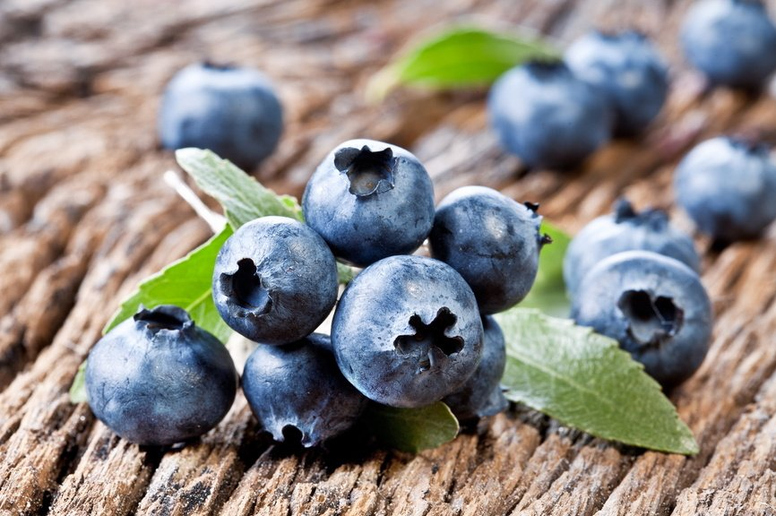

|
МЕНЮ
|
Самые лучшие сорта голубики

Часто люди, имеющие садовые участки, хотят выращивать какие-нибудь ягоды, но не знают, какие выбрать. Я могу посоветовать выращивать голубику. Она достаточно неприхотлива и ухаживание за ней не займет много времени. Здесь представлены несколько морозостойких и сладких сортов, которые вам могут понравиться.